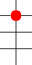
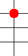
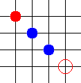
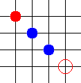
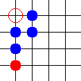
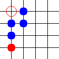
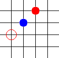
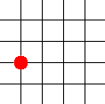
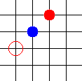
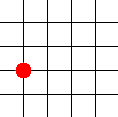

ConwayGo: Regeln
ConwayGo ist ein einfaches Spiel. Es gibt zwei Arten von Figuren:
Erstens den Ball:  ,
zweitens die Spieler:
,
zweitens die Spieler:  .
.
Und es gibt auch zwei Arten von Zügen:
-
Setze einen Spieler auf das Spielbrett.
Befindet sich der Mauscursor über einem leeren Feld auf dem Brett,
wird ein blauer Ring angezeigt:
 .
Durch Drücken der Maustaste wird ein Spieler aufs Brett gesetzt.
(Die Spieler werden auch "Philosophen" genannt, da sie sich nie bewegen.)
.
Durch Drücken der Maustaste wird ein Spieler aufs Brett gesetzt.
(Die Spieler werden auch "Philosophen" genannt, da sie sich nie bewegen.)
-
Springe mit dem Ball.
Bewege den Mauscursor über den Ball.
Falls es direkt neben dem Ball (gerade oder schräg) einen Spieler gibt, wird
ein roter Ring um den Ball herum angezeigt:

Klicke auf den Ball, um das Springen zu beginnen; danach klicke auf das Zielfeld.
Der Ball hüpft über den angrenzenden Spieler und landet direkt hinter ihm,
wobei der Spieler vom Brett entfernt wird:
 

Du kannst in alle 8 Richtungen und auch über mehrere Spieler auf einmal springen:
 
 
Außerdem kannst Du in einem Zug mehrmals springen:
 
   
 
Der Ball darf nicht über den linken oder rechten Rand ins Aus springen.
Das Ziel des Spiels ist es, den Ball auf die Grundreihe des Gegners (oder darüber hinaus)
zu bringen.
Der erste Spieler spielt nach oben, der zweite nach unten.
Das ist alles!